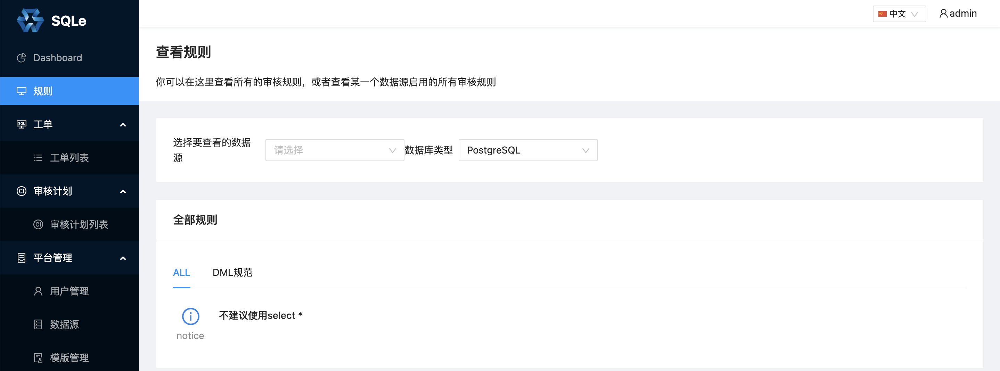
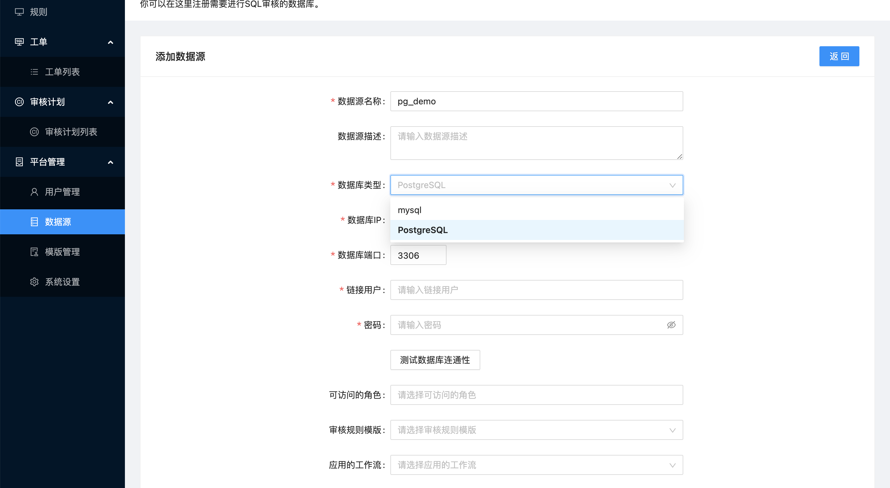

数据库审核插件使用
一、配置插件
创建插件二进制目录，通常创建在 SQLE 的工作目录下：
bash-4.2$ ls -l
total 24
drwxr-x--- 2 actiontech-universe actiontech 4096 Oct 8 09:30 bin
drwxrwx--- 1 actiontech-universe actiontech 4096 Oct 12 13:40 etc
drwxr-x--- 1 actiontech-universe actiontech 4096 Oct 12 13:40 logs
drwxr-xr-x 1 actiontech-universe actiontech 4096 Oct 8 09:30 plugins # 创建插件目录
drwxr-x--- 2 actiontech-universe actiontech 4096 Oct 8 09:30 scripts
drwxr-x--- 3 actiontech-universe actiontech 4096 Oct 8 09:30 ui
修改配置文件 sqle.yml：
server:
sqle_config:
server_port: 10000
auto_migrate_table: true
debug_log: false
log_path: './logs'
plugin_path: './plugins' # 此处填写插件目录，也可以填写绝对路径
db_config:
mysql_cnf:
mysql_host: '127.0.0.1'
mysql_port: '3306'
mysql_user: 'root'
mysql_password: 'mysqlpass'
mysql_schema: 'sqle'
二、集成插件
将插件的二进制文件放在一、配置插件中创建的目录 plugins/内，其中插件的可以由第三方提供或者自行编译，参考：sqle-pg-plugin
ps：在重启 SQLE 前，需要确保 SQLE 的运行用户拥有插件二进制的执行权限，如果没有，可以通过以下命令来设置：
chmod +x /opt/sqle/plugins/sqle-pg-plugin
三、重启 SQLE Server
rpm 安装
systemctl restart sqled
docker
docker restart sqle-server
四、确认插件生效
通过日志
重启后，若成功加载插件，日志中会打印当前加载的审核插件：
time="2021-10-12T14:06:42+08:00" level=info msg="starting sqled server"
time="2021-10-12T14:06:42+08:00" level=info msg="plugin inited" plugin_name=PostgreSQL
...
time="2021-10-12T14:06:43+08:00" level=info msg="starting http server on :10000"
通过页面
- 查看 SQLE 规则页面，PostgreSQL 插件支持的审核规则已经加载到 SQLE Server：

- 添加数据源，显示已经可以添加 PostgreSQL 类型的数据源。
